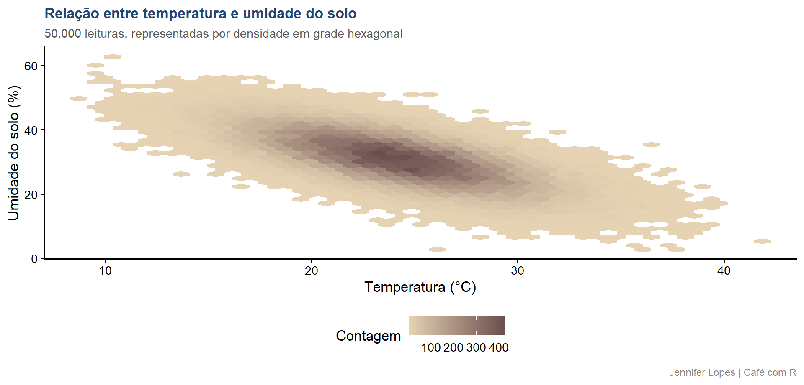

Aula 52. EDA automatizada x EDA manual
Quando cada uma serve, EDA por grupos e EDA com dados grandes
Acompanhe o Café com R
Que cada gole desperte uma nova ideia.
Que cada script abra uma nova conversa.
Que o Café com R se torne um ponto de encontro nosso.
SITE OFICIAL > https://jenniferlopes.github.io/meu_site/
Objetivos da aula
- Realizar EDA por grupos, ambiente e genótipo, com o pacote metan
- Revisar o que a EDA automatizada resolve e o que ela não resolve
- Lidar com sobreposição de pontos em conjuntos de dados grandes
- Decidir quando usar EDA automatizada e quando usar EDA manual
Bloco 1
EDA por Grupos com metan
Conceito, por que agrupar antes de analisar
Contexto: um ensaio multiambiente avalia 10 genótipos de soja em 4 ambientes, com 3 repetições cada, totalizando 120 parcelas.
Calcular um resumo descritivo único, ignorando o ambiente, mistura a variação genética com a variação ambiental, e esconde justamente a informação mais relevante em um ensaio multiambiente, como o desempenho relativo de cada genótipo em cada condição.
O pacote metan, desenvolvido especificamente para experimentos multiambiente, fornece funções de estatística descritiva já preparadas para essa estrutura de agrupamento.
Código: estatística descritiva por grupo
Output e interpretação
# A tibble: 4 × 11
ambiente variable cv max mean median min sd.amo se ci.t n.valid
<chr> <chr> <dbl> <dbl> <dbl> <dbl> <dbl> <dbl> <dbl> <dbl> <dbl>
1 Ambiente 1 produtiv… 7.45 3827. 3316. 3325. 2713. 247. 45.1 92.2 30
2 Ambiente 2 produtiv… 7.99 4104. 3516. 3497. 2871. 281. 51.3 105. 30
3 Ambiente 3 produtiv… 5.82 4018. 3555. 3548. 3160. 207. 37.8 77.3 30
4 Ambiente 4 produtiv… 7.16 4372. 3809. 3817. 3344. 273. 49.8 102. 30- A produtividade média cresce de forma consistente do Ambiente 1 ao Ambiente 4, um padrão que um resumo descritivo único, sem agrupamento, esconderia completamente. A EDA por grupo é o ponto de partida obrigatório antes de qualquer modelo de interação genótipo por ambiente.
Bloco 2
Revisitando a EDA Automatizada
O que ela resolve e o que ela não resolve
Pacotes de EDA automatizada, como os vistos anteriormente, resolvem bem a padronização de nomes, o resumo estatístico geral e o panorama inicial de estrutura e dados ausentes.
Eles não resolvem a exploração orientada pela estrutura experimental do problema, como a comparação entre ambientes, genótipos ou tratamentos, que exige agrupamento definido pelo analista, e não descoberto automaticamente pela ferramenta.
A EDA automatizada entrega o panorama. A EDA manual, com agrupamento correto, entrega a resposta à pergunta de pesquisa.
Bloco 3
EDA com Dados Grandes
O problema, sobreposição de pontos
Contexto: um sensor de campo registra temperatura e umidade do solo a cada minuto, gerando 50.000 leituras ao longo de um período de monitoramento.
Um gráfico de dispersão tradicional, com
geom_point(), sobrepõe tantos pontos nessa quantidade de dados que a maior parte da figura se torna uma mancha densa e uniforme, escondendo a real concentração dos dados.Duas estratégias resolvem esse problema, reduzir o número de pontos plotados por amostragem, ou substituir o gráfico de dispersão por uma representação de densidade em grade.
Código: amostragem e geom_hex()
leituras_sensores |>
slice_sample(n = 2000) |>
ggplot(aes(x = temperatura, y = umidade)) +
geom_point(alpha = 0.4, color = cores_cafe["azul_claro"])
leituras_sensores |>
ggplot(aes(x = temperatura, y = umidade)) +
geom_hex(bins = 40) +
scale_fill_gradient(low = cores_cafe["bege"], high = cores_cafe["marrom"])Gráfico e interpretação

- A representação em grade hexagonal revela a densidade real da relação entre as duas variáveis, algo que um gráfico de dispersão tradicional, com 50.000 pontos sobrepostos, tornaria ilegível. A amostragem por
slice_sample()é uma alternativa mais simples, útil para uma inspeção rápida antes de decidir a estratégia final de visualização.
Bloco 4
Quando Cada Abordagem Serve
Tabela de decisão final
| Situação | Abordagem indicada |
|---|---|
| Primeiro contato com dados novos, poucas colunas | EDA automatizada |
| Estrutura experimental com grupos, ambientes ou tratamentos | EDA manual, com agrupamento definido pelo analista |
| Ensaio multiambiente ou multigenótipo | Funções específicas, como as do pacote metan |
| Conjunto de dados com dezenas de milhares de observações ou mais | Amostragem para inspeção rápida, geom_hex() para visualização final |
| Investigação dirigida pela pergunta de pesquisa | EDA manual, sempre |
Erro comum 1, aplicar EDA automatizada sem agrupar
Rodar um relatório automatizado padrão em um ensaio multiambiente, sem primeiro agrupar por ambiente e por genótipo, entrega um resumo estatisticamente correto, mas irrelevante para a estrutura real do experimento.
A pergunta de pesquisa deve guiar o agrupamento, a ferramenta automatizada não infere essa estrutura sozinha.
Erro comum 2, plotar milhões de pontos sem ajuste
Gerar um
geom_point()padrão com um número muito grande de observações produz um gráfico ilegível, e também um arquivo pesado e lento de renderizar.Ajustar a estratégia de visualização, com amostragem ou representação de densidade, ao volume de dados disponível deve ser uma decisão tomada antes de gerar o gráfico, não depois de constatar que ele não serve.
Resumo: EDA automatizada x EDA manual
| Abordagem | Vantagem | Limite |
|---|---|---|
| EDA automatizada | Rápida, padronizada, boa para primeiro contato | Não considera a estrutura experimental do problema |
| EDA manual | Dirigida pela pergunta de pesquisa | Exige mais tempo e conhecimento do domínio |
| metan | Preparado para dados multiambiente | Específico para essa estrutura experimental |
| geom_hex, amostragem | Resolve sobreposição em dados grandes | Não substitui a inspeção detalhada de subconjuntos relevantes |
Obrigada!

Continue praticando e explorando.
Esta aula é parte do projeto Café com R. É open source. Use, compartilhe e adapte.
Siga o Café com R
Que cada gole desperte uma nova ideia.
Que cada script abra uma nova conversa.
Que o Café com R se torne um ponto de encontro nosso.
SITE OFICIAL > https://jenniferlopes.github.io/meu_site/

Jennifer Lopes | Café com R